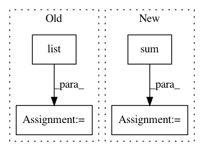

3227c2ed4ae92c6b9ecfc1b2c614ff4c36bd9fd0,lexos/processors/analyze/information.py,FileInformation,__init__,#FileInformation#,132
Before Change
std_err_word_count = sqrt(std_err_word_count)
// 2 iqr analysis
temp_list = sorted(list(word_list.items()), key=itemgetter(1))
mid = temp_list[int(num_word / 2)][1]
q3 = temp_list[int(num_word * 3 / 4)][1]
q1 = temp_list[int(num_word / 4)][1]
iqr = q3 - q1
// pack the data
self.file_name = file_name
self.num_word = num_word
self.total_word_count = total_word_count
self.word_count = word_list
self.average = average_word_count
self.std_err = std_err_word_count
self.q1 = q1
self.median = mid
self.q3 = q3
self.iqr = iqr
self.hapax = (list(word_list.values()).count(1))
def list_stat(self):
After Change
// initialize
num_word = len(word_list)
word_list_values = list(word_list.values())
total_word_count = sum(word_list_values)
// 1 standard error analysis
average_word_count = total_word_count/num_word
// calculate the StdE
std_word_count = np.std(word_list_values)
In pattern: SUPERPATTERN
Frequency: 5
Non-data size: 4
Instances
Project Name: WheatonCS/Lexos
Commit Name: 3227c2ed4ae92c6b9ecfc1b2c614ff4c36bd9fd0
Time: 2017-07-21
Author: weltch1997@gmail.com
File Name: lexos/processors/analyze/information.py
Class Name: FileInformation
Method Name: __init__
Project Name: dask/dask-image
Commit Name: cbbcea8795e8da754a5b3ffb1a08ef66afd84eef
Time: 2018-09-02
Author: jakirkham@gmail.com
File Name: dask_image/ndmeasure/_utils.py
Class Name:
Method Name: _ravel_shape_indices
Project Name: yzhao062/pyod
Commit Name: 24d96c7ec2d80322ceb7a084199b891c9ebf88b9
Time: 2019-03-12
Author: yalmardeny@tssg,org
File Name: pyod/models/sod.py
Class Name: SOD
Method Name: _snn
Project Name: rasbt/mlxtend
Commit Name: 7446d43f2350302a1fb44278378e9072b29aaa80
Time: 2017-09-07
Author: adam-erickson@users.noreply.github.com
File Name: mlxtend/feature_selection/exhaustive_feature_selector.py
Class Name: ExhaustiveFeatureSelector
Method Name: fit
Project Name: pytorch/examples
Commit Name: 9faf2c65f74e3ee9bdaeedf9f3e5856727f0afe7
Time: 2017-12-04
Author: design@kaixhin.com
File Name: reinforcement_learning/actor_critic.py
Class Name:
Method Name: finish_episode